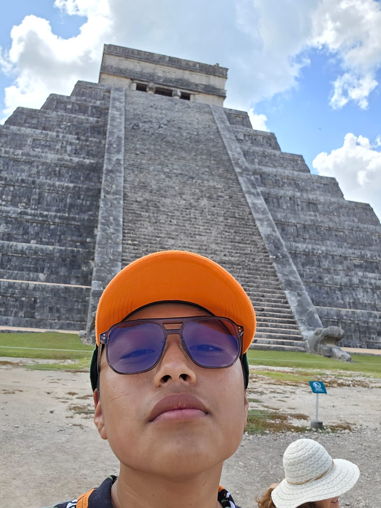

El Templo de Kukulkán (Chichén Itzá)

El Castillo, principal pirámide de Chichén Itzá y templo del dios Kukulkán.
Es un edificio prehispánico ubicado en la península de Yucatán, en el actual estado del mismo nombre. El actual templo se construyó en el **siglo XII d. C.** por los mayas Itzáes en su capital, la ciudad de Chichén Itzá, fundada originalmente en el siglo VI d. C.
El templo es un testimonio de la avanzada ingeniería y conocimientos astronómicos mayas. La pirámide cuenta con 91 escalones en cada uno de sus cuatro lados, que, sumados a la plataforma superior, totalizan **365**, el número de días del calendario solar (Haab').
Durante los equinoccios de primavera y otoño, un juego de sombras proyecta la figura de una serpiente emplumada descendiendo por la escalinata, simbolizando el descenso del dios Kukulkán a la Tierra. Este evento atrae a miles de visitantes anualmente.
Volver a la página principal